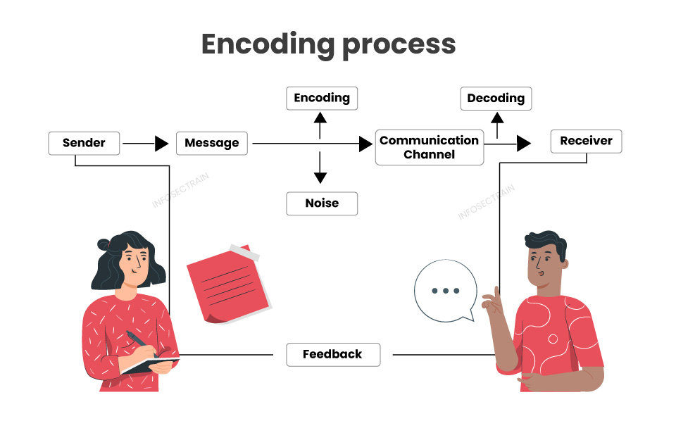
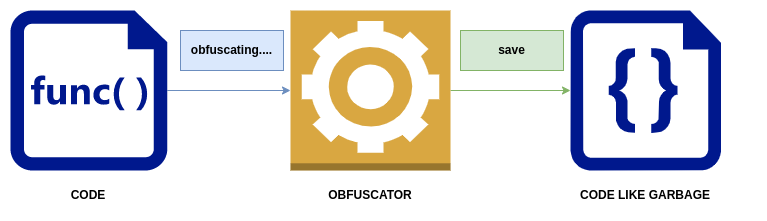

کدگذاری Unicode و استاندارد ASCII
24 خرداد 1404
در این مقاله ابتدا مجموعه کاراکترهای Unicode رو بررسی میکنیم و سپس به سراغ توضیح یک استاندارد اصلی آن بنام ASCII میریم.


خب Encryption و Encoding و Hashing و Obfuscation اصطلاح های شبیه به هم هستن و همین باعث میشه که خیلی وقت ها آدم رو گیج کنن. پس بریم که گره ها رو باز کنیم و دونه دونه بریم سراغشون. همچنین به توضیح Unicode ها و انواع آن هم میپردازیم.
توی روش Encoding، داده هامون از یک فرم به یک فرم دیگه تغییر پیدا میکنن. هدف اصلی Encode کردن اینه که داده رو به فرمی تبدیل کنیم که توسط اکثر سیستم ها قابل خوندن بشه یا برای هر پروسس externalای قابل استفاده بشه. این روش برای امن کردن داده نیست. الگوریتم های عمومی (Public) زیادی برای Encode کردن موجود هستند.
یکی از استفاده های مهم Encoding **کاهش دادن سایز** فایل های صوتی و تصویریه. هر فرمت فایل صوتی و تصویری یک برنامه coded (که جمع و جور شده ی coder-decoderه) مربوط به خودش رو داره که برای code کردن فایل به فرمت مناسب و همینطور برای decode کردن در زمان پخش استفاده میشه.
وقتی هم که بخواهیم داده Encode شده را به حالت اولیه باز گردانیم باید آن را به اصطلاح Decode کنیم.
مثال هاش: ASCII، BASE64، UNICODE
در واقع Encryption یک تکنیک encodingه. منتها به نحوی که داده مون توسط یک الگوریتم encyption، encode میشه. این کار به نحوی انجام میشه که فقط آدم هایی که جوازش رو دارن بتونن به داده دسترسی پیدا کنن. قراره از Encryption به این خاطر استفاده کنیم که داده مون از چشم بقیه دور بمونه.
شبیه به وقت هایی که با دوست های خیلی صمیمی مون توی دبستان یک زبان اختراع میکردیم که فقط خودمون تا دو تا میفهمیدیم چی میگی
توی فرآیند Encryption داده ای که قراره Encrypt بشه (که بهش میگیم plain-text) توسط الگوریتم encryptionای مثل AES یا RAS با استفاده از یک secret key که بهش میگیم cipher انتقال داده میشه.
به داده encrypt شده cipher-text میگیم و در آخر کار هم سمتی که قراره داده رو بگیره با همون secret key داده رو به حالت plain-text بر میگردونه.
به صورت کلی دو نوع الگوریتم encryption داریم:


به نظر من فکر کردن به ترجمه هاشون شما رو الکی میترسونه، نسبتا بحث پیچیده ای هستن ولی نه اندازه ای که فارسیش میترسونه
در حالت symmetric encryption برای رمزنگاری فقط از **یک کلید** هم برای encode و decode کردن استفاده میشه (مثلا الگوریتم AES همینطوریه)
ولی در حالت asymmetric encryption داده با کمک دو کلید مختلف که به اسم private key و public key شناخته میشن، رمزنگاری رو انجام میدیم. (مثالش هم الگوریتم RSA).
وقتی هم که بخواهیم داده Encrypt شده را به حالت اولیه باز گردانیم باید آن را به اصطلاح Decrypt کنیم.
در فرآیند Hashingِ، داده با یه hashing function به یک hash تبدیل میشه که میتونه هر عبارت عجیب و غریبی که شامل کاراکتر هاست باشه.
نکته اینجاست که هر عبارتی فقط به یک عبارت عجیب و غریب hash میشه و اگر کسی بخواد اون وسط تغییری توی داده ایجاد کنه کلا یک عبارت عجیب و غریب دیگه ایجاد میشه. ما از این طریق میتونیم به صحت داده مون یا همون Data Integrity پی ببریم.
مثلا اگر پیامی یا عکسی به دوستامون توی پیام رسان های درست و حسابی بفرستیم اگر کسی اون وسط دستکاریش کنه، hash داده ای که به دوستمون رسیده با hash داده ای که ما فرستادیم فرق داره. یه استفاده دیگه از hash میتونه برایverify کردن پسورد هامون زمان وارد شدن به وبسایت های مختلف باشه.
برای تبدیل مقادیر هش شده به حالت اولیه راه هایی مانند استفاده از Rainbow Table ها و همچنین Reverse Cracking وجود دارد اما قطعی نیستند.

فر آیند Obfuscation بر روی دیتا بدین منظور انجام میشود تا فهم آن دشوار شده و به سختی بتوان آن را کپی کرد و یا مورد سوء استفاده قرار داد. یک کاربرد بسیار متدوال انجام Obfuscation بر روی سورس کدهای اپلیکیشن های مختلف است که هدف از این کار جلوگیری از تکثیر غیرمجاز محصولی است که به روش مهندسی معکوس قابلیت باز تولید داشته باشد.فر آیند Obfuscation بر روی دیتا بدین منظور انجام میشود تا فهم آن دشوار شده و به سختی بتوان آن را کپی کرد و یا مورد سوء استفاده قرار داد. یک کاربرد بسیار متدوال انجام Obfuscation بر روی سورس کدهای اپلیکیشن های مختلف است که هدف از این کار جلوگیری از تکثیر غیرمجاز محصولی است که به روش مهندسی معکوس قابلیت باز تولید داشته باشد.
باید به این نکته اشاره شود که Obfuscation در زمینۀ مراقبت از دیتا به اندازۀ Encryption قوی نیست اما میتواند به صورت یک مانع عمل کند. همان طور که در Encoding میتوانیم عمل عکس را انجام دهیم و دیتای اصلی را بازیابی کنیم، در Obfuscation نیز در بیشتر موارد این امکان وجود دارد.
نکتهٔ کلیدی و مهمی که در مورد Obfuscation وجود دارد این است که چگونگی انجام این عمل، به محتوای دیتا بستگی دارد؛ مثلاً در صورتی که بخواهیم این عمل را بر روی بخشی از یک سورس کد انجام دهیم، محدودیت ما این است که باید دیتایی که پروسهٔ Obfuscation بر روی آن اِعمال شده کماکان توسط کامپیوتر قابل استفاده باشد و اگر اینچنین نباشد، مسلماً برنامه دیگر کار نخواهد کرد.
شاید این سؤال در مورد Obfuscation مطرح شود که «چه موقع به جای Encryption از Obfuscation استفاده میشود؟
در پاسخ به این سؤال میتوان گفت که Obfuscation و Encryption در واقع دو کاربرد جدا دارند به طوری که هدف از Encryption این است که فردی که کلید ندارد قادر به بازیابی دیتای اصلی نباشد اما در Obfuscation هدف این است که استفاده از دیتای اصلی برای یک کاربر (که این کاربر میتوان انسان، کامپیوتر یا هر چیزی باشد) دشوار و برای کاربری دیگر راحت و آسان باشد.
مثلاً پس از انجام Obfuscation بر روی سورس کد یک اپ موبایل، فهم سورس کد و استفاده از آن برای انسان سخت میشود اما همان کد برای سیستم عامل به راحتی قابل استفاده است.

در این مقاله به بررسی تکنیکهای پیشرفته تست نفوذ در شبکههای سازمانی میپردازیم.
در این مقاله نحوه استفاده از زبان برنامهنویسی پایتون برای توسعه ابزارهای امنیتی را آموزش میدهیم.
آموزش جامع پیکربندی فایروال در روترهای میکروتیک برای محافظت از شبکه در برابر حملات.